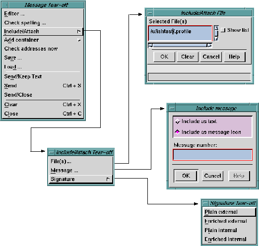

The
Include/Attach -> option enables you to include an external file
in the message you are currently composing. This is one of the
most powerful features of the MIME specification. The data in
the external file can be of any type. It will be marked with
identifying information such that the recipient's mail tool can
present the data appropriately. For example, if you include an
audio clip and the recipient reads the message with a
MIME-capable mail tool, the audio clip will be played through
the system's speakers.
There are several options available when adding data from an
external file to your message:
- You can expand the contents of the file in-line in your
message, at the point where the cursor is positioned.
NOTE:
This is intended for files containing ASCII
text. It's not very useful to expand non-ASCII
data in-line, but you can if you want.
- You can add the file to your message as an icon, which is
inserted into the text at the point where the cursor is
located. The icon will flow with the text as new text is
typed.
NOTE:
Different icons are used to represent different
data types. You can also edit the label on the
icon to describe the contents of the file.
Icons
Representing Included Files
shows examples
of
icons that represent included GIF, JPEG,
binary, PostScript, MPEG, and U-LAW audio
files in a Composition window.
- You can specify that the file is to be included as part of
the message, or attached to the message with a pointer.
Attaching a file with a pointer is useful for mailing
messages containing large external files, so you don't
need to worry about overflowing the recipient's mail
spool directory with a huge mail message.
- You can specify the data type of the file being included.
Ishmail makes a guess about the data type, based on file
name suffix. You can override the guessed type, as well as
extend the list of possible data types.
When you click the
Include/Attach -> option, a cascading menu
appears from which you select the inclusion or attachment that
you want to include in your message. The figure shows the
menus available from the
Include/Attach -> option.

The available file type options are:
- File(s) ...
- This is the general purpose option for including or
attaching an external file. When you select this option
the
Include/Attach File dialog is opened.
- Message ...
- This is a special case option of including a message from
the current folder. When you select this option the
Include
Message dialog is opened. You will be prompted for the
number of the message you want to include.
TIP:
You may find it more convenient to click on a
message in the
Folder Contents area, drag it into
the Composition window, and drop it where
you want. See
Using Drag-and-Drop.
- Signature ->
- This is a special case option for including your signature
file into the message. When you select this option
another cascading menu appears, which lets you select
from among possible signature files.
TIP:
This option lets you include your signature
anywhere in the message. Clicking the
Add
signature button near the bottom of the
Composition window causes the signature to
be added to the end of the message when it is
sent.
Preceding Section: Spelling Checker Option
Following Section: Including or Attaching an External File
Parent Section: Composition Message Menu
Contents of Ishmail User's Guide